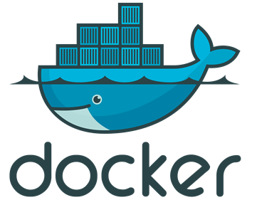
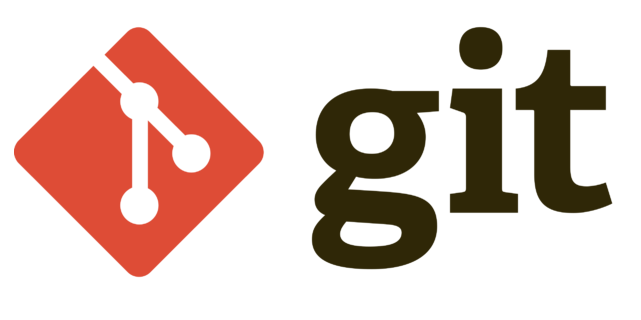
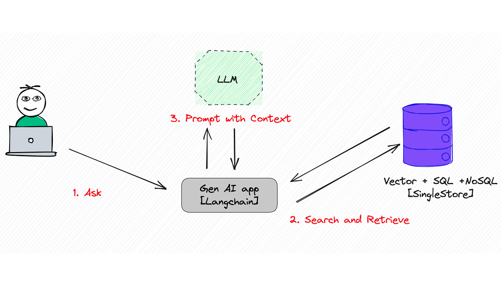
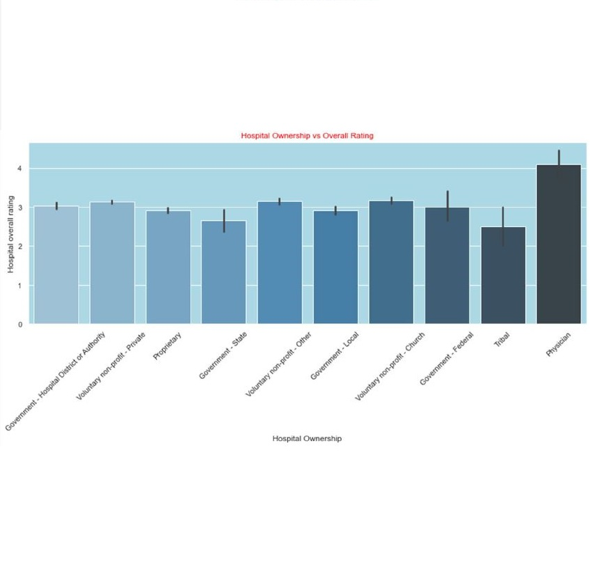
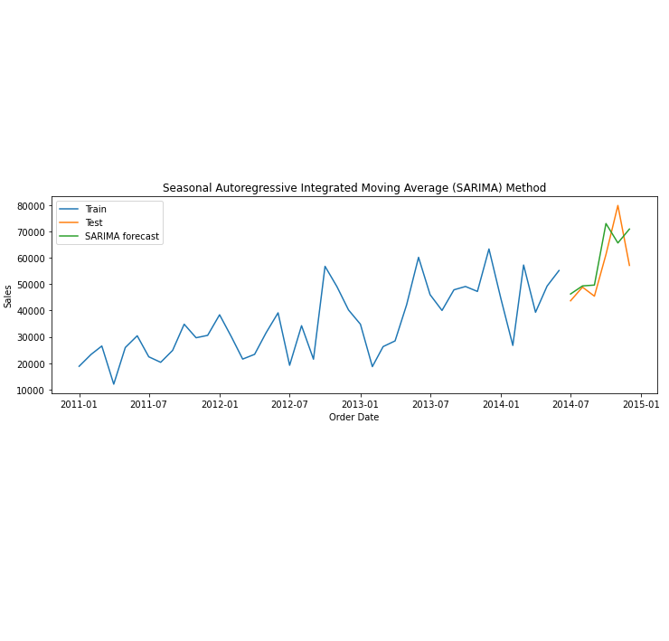
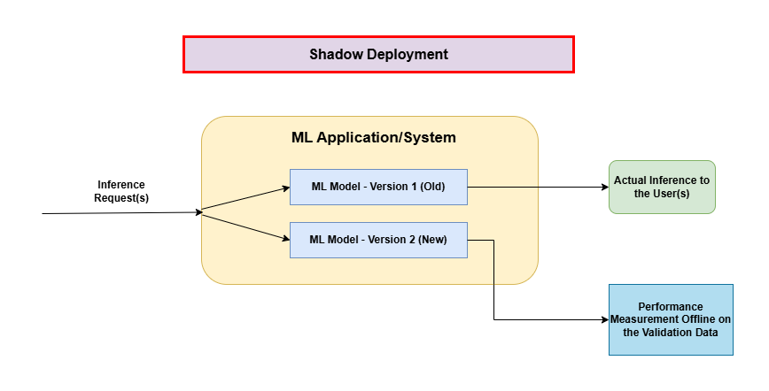
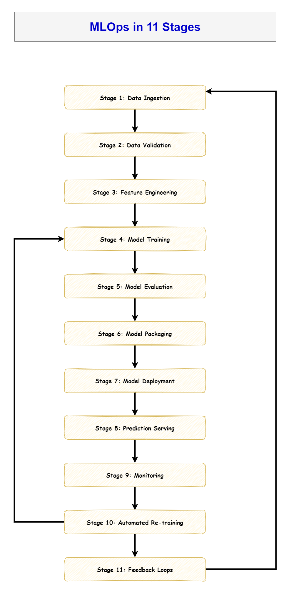
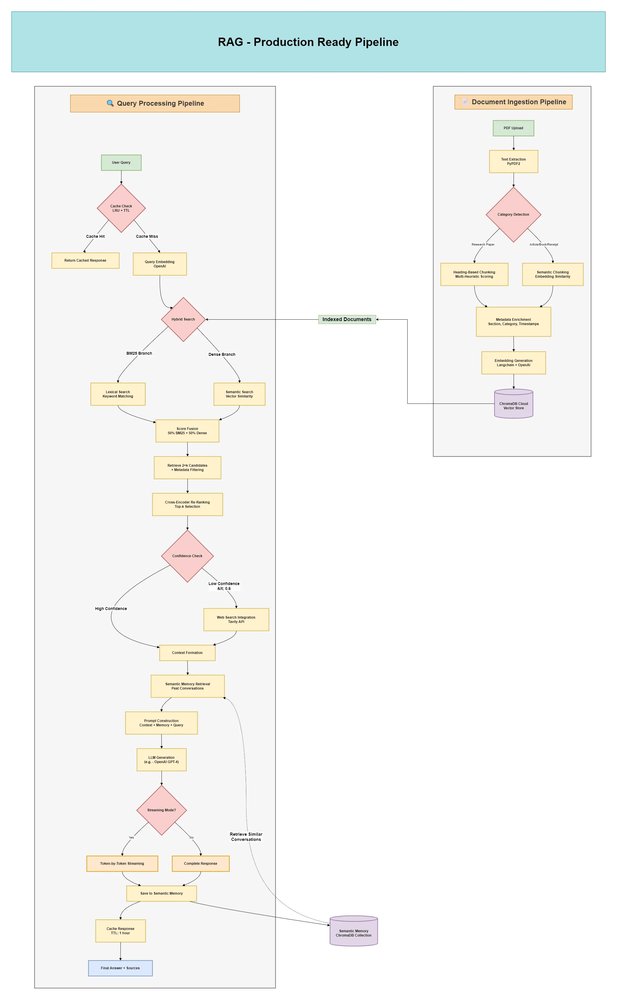
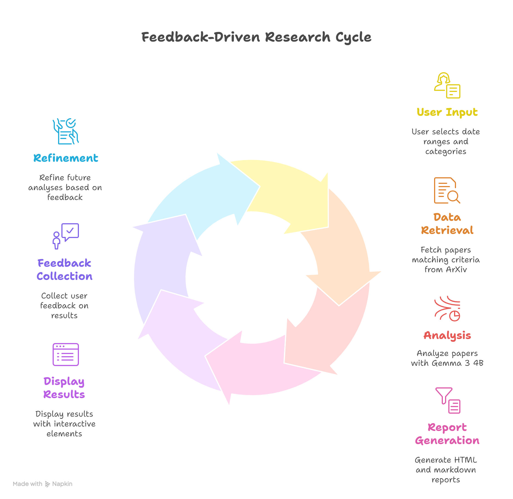
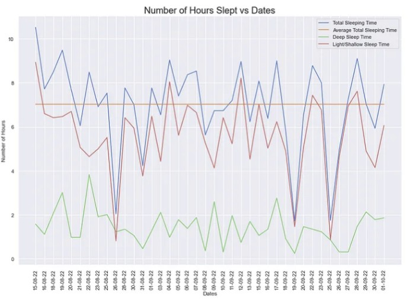

10 Interesting MLOps Interview Questions for ML Engineers
Essential Questions to Prepare for Your Next Role in MLOps & ML Engineering
Read ArticleResults-driven Data Scientist with 2 years experience building scalable ML solutions in industry and academia.
Deployed recommendation systems and predictive models to boost user growth and retention.
Skilled in real-time analytics, NLP, AWS, Azure; expert at transforming data into actionable insights.
Proficient in Python, SQL, Power BI, Tableau and advanced statistics, with a passion for continuous learning.


Have a Glimpse
a hyper-personalized, AI-powered coaching platform that translates the abstract goal of "living sustainably" into a manageable, engaging, and highly effective personal journey.
Desgined a locally hosted LLM based AI-Agent for researching top research papers from Arxiv
Designed a pipeline for streaming data from reddit, and then performed a sentiment analysis classification on it

Designed a RAG application for chatting with PDF using Locally hosted LLM using Ollama

Analyzed CMS Rating data to perfrom business analysis on the root causes of poor performance and CMS score for a hospital

Forecasted 6-months sales for a retail chain using smoothing and auto-regressive methods, by analyzing time series data
Designed and deployed an XGBoost ML Model on Azure, after performing Root cause analysis on the causes of possible Credit Card fraud.
Designed a ML based analytical technique to identify and predict the causes of churn in the telecom sector
Insights and knowledge sharing

Essential Questions to Prepare for Your Next Role in MLOps & ML Engineering
Read Article
The 11-Stage Pipeline That Separates Data Scientists From ML Engineers
Read Article
From Generic Chunking-based RAG to Category-Aware RAG: A Deep Dive into Production-Ready Document Processing
Read Article
A Multi Agent Framework that helps with researching the top AI Papers in ArXiv
Read Article
Ongoing projects and contributions
A journey of growth and innovation
Academic journey that shaped my expertise
Let's connect and collaborate